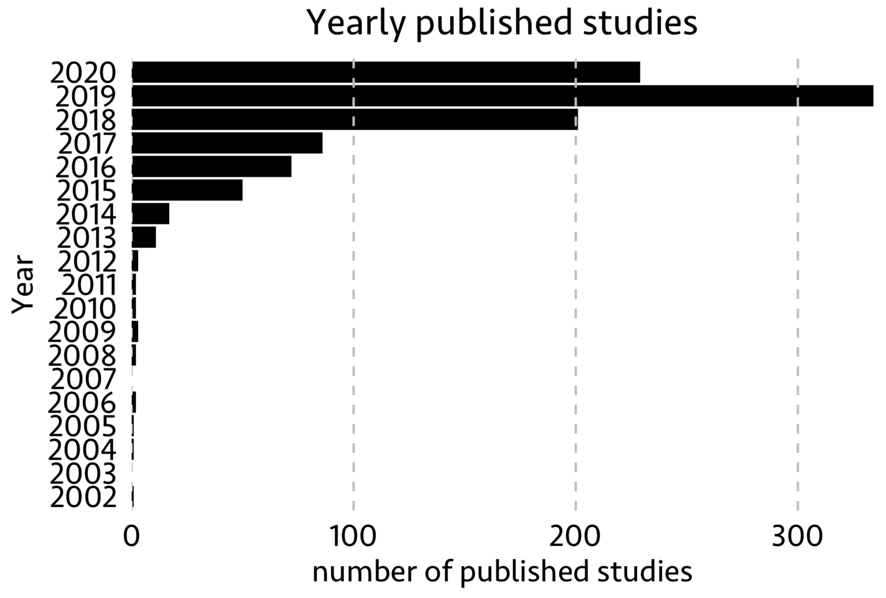
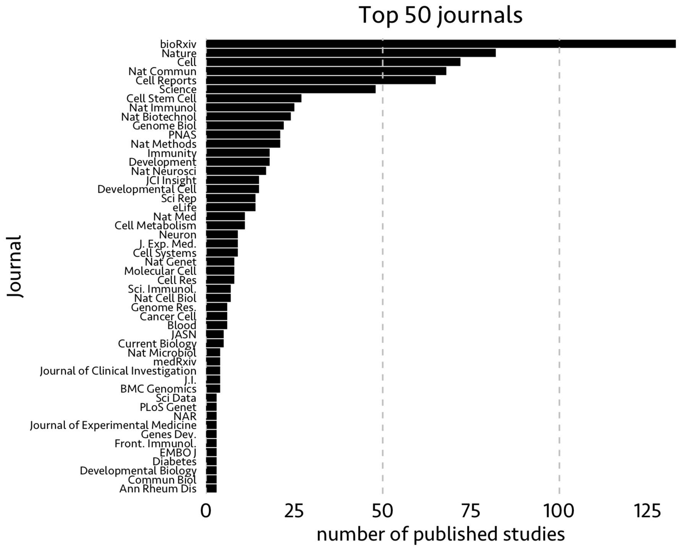
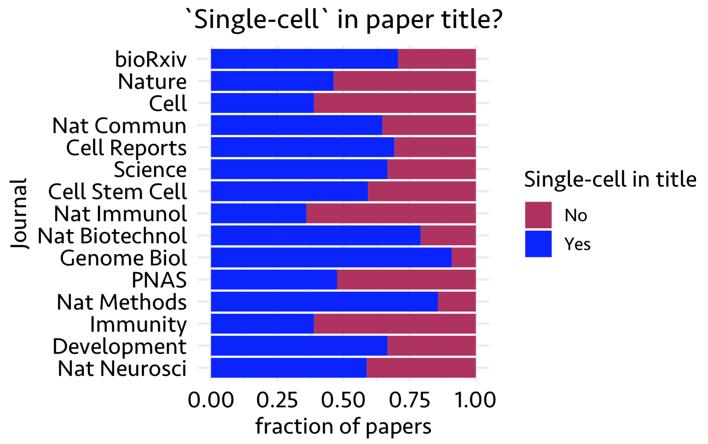
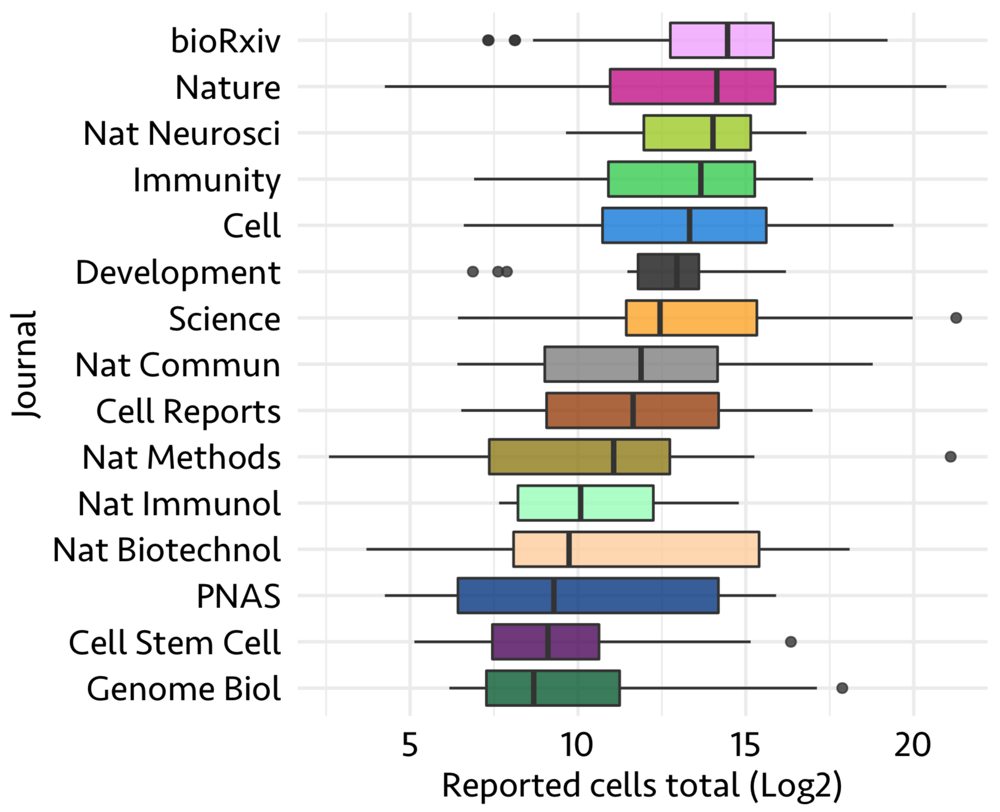
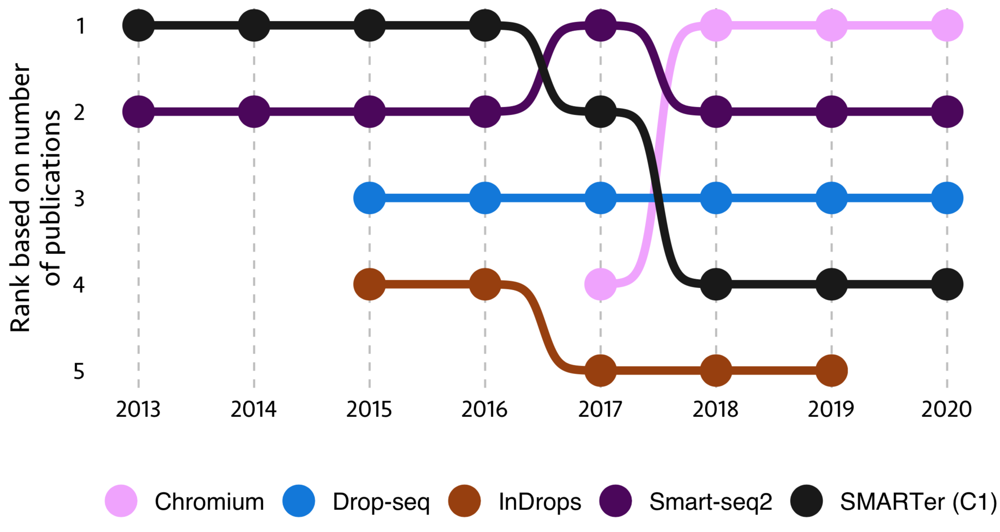
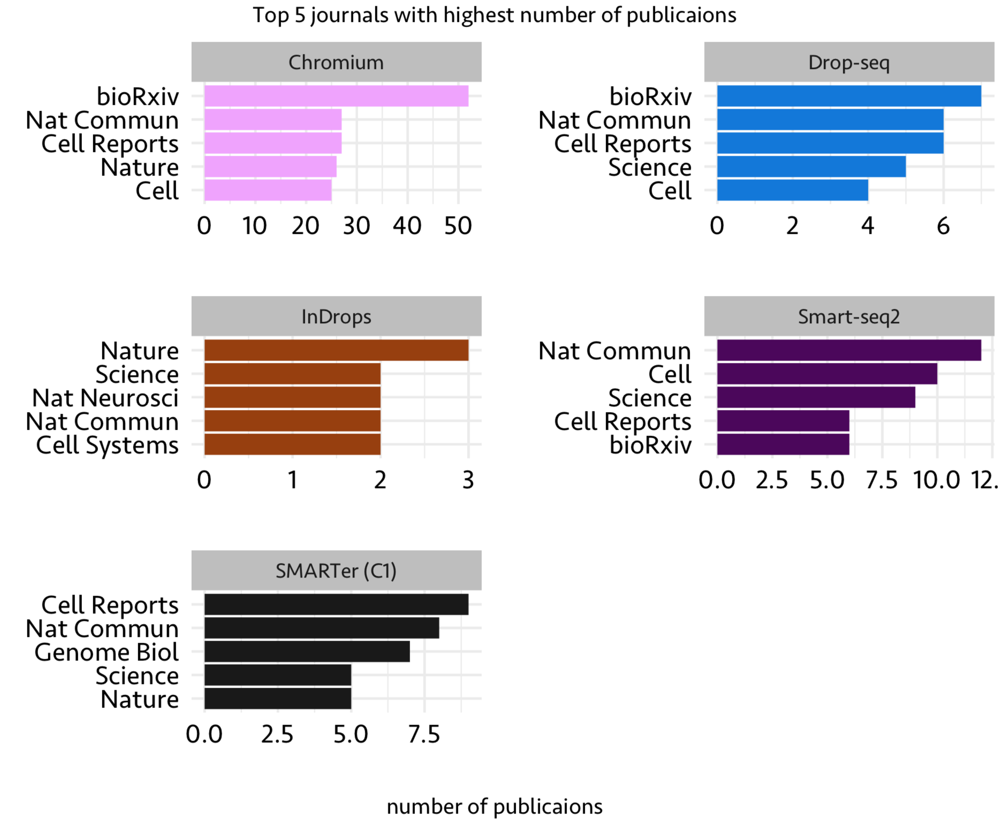

Asking good questions is the key to success of any data science project. The ‘good’ part includes a long list of conditions to satisfy, for example how much benefit a project will get after we answer a question spending a significant amount of time. However, listing out all the possible questions and prioritizing will be a good beginning for the project.
Data science projects involve asking questions in two ways
-
A) asking questions when the data already exists without a specific goal (an exploratory analysis)
-
B) asking questions for a specific goal and generating/acquiring data to reach that goal
In most projects, at least in quantitative biology, both of these aspects go together and in some projects the only possible scenario is (A). For example, given a spreadsheet of information, how do you go on asking questions whose results are somehow useful to the company or taking publicly available biological data, how do you produce new insights other than already reported.
In this blog post, I will demonstrate, with a spreadsheet of information, how to start asking questions that bring out some relationship among the features (columns) and potentially answer some basic questions and provide simple visualizations for each question. For this purpose, I use single-cell database I came across on twitter a few days back shared by Valentine Svensson.
Here is the sample data from this file
Now, let’s start answering some questions. But before, a small sisclaimer
This analysis is only for demonstration of how one can start asking questions simply from a given spreadsheet. Hopefully to help beginners to give a starting point
- How many single-cell RNA-seq papers published per-year?
In the above database, the first paper reported was from 2002. One can visualize total number of published papers from 2002-2020 as below using features Date and Title

As you see, the number of published studies constantly increased from 2002. Especially in the last 5 years, single-cell techs gained enormous popularity and importance.
- Journals in which single-cell studies were published
If there is such an increase in single-cell publications with each year, which journals published these studies. In the following figure, I showed top 50 journals with most published single-cell papers using feature Journal

Note that some (most) of the papers uploaded to biorxv might have been published in other peer-reviewed journals.
- Does paper title contain ‘single-cell’ in it?
Next, I looked into published paper titles and asked if the title contains ‘single-cell’ in it. Using features Journal and Title, in the following figure, I show what fraction of papers show ‘single-cell’ in their titles from top 15 journals with most published papers

Looks like most papers carry ‘single-cell’ in their title.
- Number of cells in each study
Here, I show the distribution of the number of cells published in each study in above 15 journals using features Journal and Reported cells total

So far with the available data, it seems like higher the number of cells, a study has the higher chances to get published in journals like nature and cell.
- Most used single-cell technologies
This is one of the interesting questions. Here, I took the top 5 single-cell technologies with most publications in 2019 and calculated their status in last eight years. Journal, Date and Technique are the features used for this analysis

From this figure, ‘SMARTer (C1)’ tech was on top in the beginning of this decade and its usage was dropped towards the end, while ‘Chromium’ tech was started in 2017 and quickly became one of the most used technology.
- Which journals published above top technologies?
Now that we have top 5 single-cell techs, let’s look at the top 5 journals which published papers with these technologies. Features used here are Journal and Technology

There are other features such as tissue, organism studied and analysis strategy used (PCA or TSNE). Using the data available within this spreadsheet, one can do further analysis to get associations such as journal and tissue studied. In addition to analysis shown here, it is also possible to do a sophisticated machine learning analysis using different features (e.g. tissue, number of cells, technology used, organism studied) to build a model to predict the most likely journal in which a study gets published.